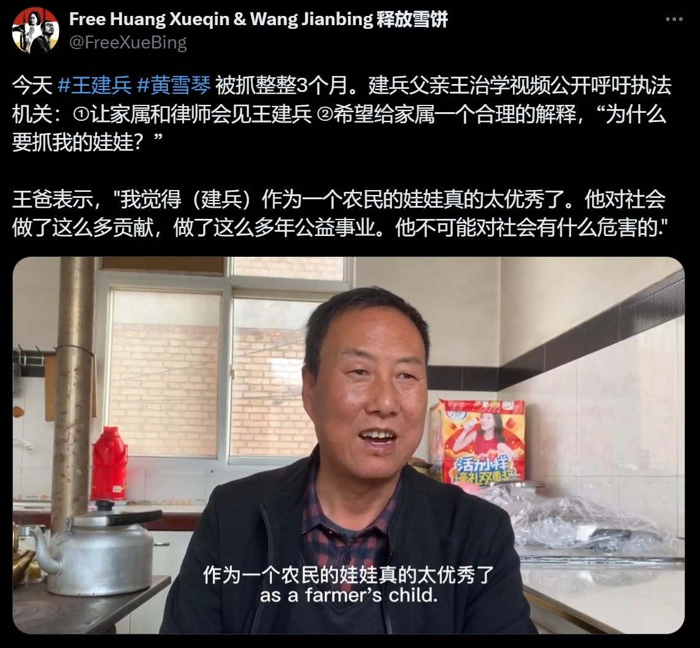

Subverting the Status Quo - WOMEN我们
Table of Contents
"But I'm reluctant to call him brave, fearless, or great. These words simplify him. He simply did what he thought he had to do, what he wanted and could do. "
Jul 06, 2024
Author | Lin Yaming
Editor | Yu Changye
Platform Editor | Qin Shan
Translators | Zhang Jiu, Chen Ren and with additional editing from Asian Labour Review
Editor's Note:
On the afternoon of September 19, 2021, the Chinese feminist journalist Huang Xueqin and labor activist Wang Jianbing were secretly taken away and arrested by the Guangzhou Public Security Bureau on charges of "inciting subversion of state power".
Almost 1,000 days after their arrest, on June 14, 2024, the verdict in the Huang Xueqin and Wang Jianbing case (the XueBing case thenceforth) was delivered after the first trial. Huang Xueqin was sentenced to 5 years of imprisonment, and Wang Jianbing was sentenced to 3 years and 6 months.
A key political reason cited for the XueBing case was the weekly gatherings organized by labor activist Wang Jianbing at his apartment. Having witnessed repression in civil society for years, Jianbing believed it was essential to bring people together, rebuild connections and networks in civil society, and explore new forms of activism. Both Jianbing and Xueqin played crucial roles.
Jianbing, a 41-year-old veteran non-profit worker and committed labor activist, maintained a low-profile while restlessly supporting the migrant worker community around occupational health and safety issues, and fostering a progressive activist community. Jianbing's story deserves attention to appreciate the resilience and resistance of China's many invisible grassroots activists fighting for social change and community empowerment.
On the morning of June 14, 2024, the verdict was finally delivered for Huang Xueqin and Wang Jianbing. They were convicted of "inciting subversion of state power".
Huang Xueqin was sentenced to five years in prison and fined 100,000 RMB. Wang Jianbing was sentenced to three years and six months and fined 50,000 RMB and confiscated an additional 100,000 RMB. Huang Xueqin immediately announced her intention to appeal, while Wang Jianbing's decision to appeal awaited consultation with his lawyer.
The "XueBing Case" verdict came as the two had been detained for nearly one thousand days.
Figure 1: When the verdict was announced in the "XueBing Case", the Guangzhou Intermediate Court was cordoned off with stainless steel guardrails. In addition to plainclothes police and "community volunteers", a large number of police officers were stationed around the area. Reporters and outsiders were prohibited from entering the court. (Photo credit: X account @FreeXueBing)
There is very little information about Jianbing available online. Friends know about his work, but they are not familiar with the specific details. After graduating from university in 2005, Jianbing began his career in the non-profit sector. Initially, he worked on rural education projects at the Beijing Western Sunshine Rural Development Foundation. In 2014, he moved to Guangzhou and joined the Gongming Social Organization Development Center as the coordinator of youth development and disability empowerment projects. Since 2018, he has been focusing on advocating for the rights of rural migrant workers with occupational diseases and providing legal support.
As one of his friends remarked, "In the NGO sector, you are either very famous or completely unknown. Jianbing belongs to the latter category."
Figure 2: After his arrest, civil support groups often cited a photo of Wang Jianbing hiking outdoors. (Photo provided by friends of "XueBing")
A Child from a Rural Village in Northwestern China
"I always feel that my son is an honest person, not a hustler. He grew up as an honest man and never betrayed his friends or lied… The most likely reason for convicting him is 'free speech'… The country's policies have changed."
Jianbing's hometown is in a village half an hour away from Tianshui City in the western Gansu Province. The village has only one main road, with houses on both sides. If the weather is good, people will be on the side of the road chatting and basking in the sun. From here, Jianbing got into Northwest Normal University in Lanzhou, then went to work in Beijing and later moved to Guangzhou.
Last September, the first trial of the "XueBing Case" was held at the Guangzhou Intermediate People's Court. Wang Zhixue, Jianbing's father, took an 11-hour high-speed train from Gansu to Guangzhou. He only carried a backpack and bought a box of local mooncakes. On the trial day, he sat in the courtroom gallery, only a meter from his son. When Jianbing left the courtroom, he glanced at his father.
At the trial, Jianbing's father saw his son in handcuffs, wearing a grey short-sleeve shirt and pants. At that moment, his only mind was to ask the lawyer to send in some clothes, "I feel his health isn't good; he's lost more than ten pounds," he murmured to himself, "I guess I can't send the clothes in, I'll wait until he is transferred to prison."
Last year's trial lasted from 9 a.m. to 4 p.m. Jianbing's father sat in the gallery and listened to the entire proceedings and defence. It was the first time he learned what his son had been doing, "He admitted that he had written those articles and expressed those views, but he did so hoping to foster a better and more harmonious society. He did not intend to incite subversion of the state, nor was he anti-party or anti-government. Those were never in his mind."
The indictment in the XueBing case was made public after last year's trial. There wasn't much evidence of Wang Jianbing's crimes: "After graduating from university, the defendant Wang Jianbing successively joined overseas online groups with the aim of subverting China's state power, such as the 'Chinese Jasmine Revolution Volunteer Corps' and the 'June 4 Massacre Memorial Museum,' and repeatedly posted or reposted false statements and articles attacking China's political system and government on overseas social media and online platforms. From May to October 2020, the defendant Wang Jianbing took an online course on 'non-violent movements' while studying in the UK".
Such evidence has drawn the scepticism of "FreeXueBing", the support group advocating for Xueqin and Jianbing's freedom. The support group believes that the content of the "statements made on foreign platforms" and the "non-violent training" mentioned in the indictment are "merely pretexts fabricated by the government to justify the politically charged accusation of 'inciting subversion of state power'".
Figure 3: A friend of Jianbing's mentioned that his WeChat moments used to be public, mainly consisting of retweets of public events and the occasional poem. However, she recently noticed that his WeChat moments were only visible for six months.
A member of "FreeXueBing" told "@WOMEN我们" that the evidence in the two's trial, especially for Jianbing, was clearly insufficient. Hence, the authorities had to fabricate some. "After their arrest, the authorities interrogated over 70 of their friends or gathering-goers, and most of the summons lasted more than 24 hours… At least two or three of them were forced to sign false statements, which the police inserted 'evidence' they had already fabricated, such as criticisms of Chinese socialism."
Despite such large-scale interrogations, the indictment could not collect sufficient meaningful information and thus only included some forcibly added evidence—the authorities thus had to interpret some of the public pages and online groups he followed as him "joining" these groups.
Before the trial, Wang Zhixue doesn't fully understand his son. "He grew up in the countryside but never did farm work. Our family was poor back then, and my mentality was that I would rather endure hardships myself and let them study more. My younger son also graduated from college." He said that after Jianbing grew up, he went to work elsewhere, "We didn't see each other much in a year, while my younger son stayed nearby."
All Wang Zhixue knows is that after graduation, his son worked in Beijing for a few years and then went to Guangzhou. In the first few years in Guangzhou, his phone calls to home were frequent, but less and less over time. Even if he returned home, the father and son didn't talk much. Jianbing wasn't good at expressing emotions. After his arrest, Jianbing wrote a letter to his family when he was transferred to another detention center, briefly describing what had happened to him and providing his new contact address, assuring them not to worry.
This was Wang Zhixue's first time visiting Guangzhou since the arrest of his son. He met the lawyer and a few of Jianbing's friends. It was his first time learning about his son's life and work there. He even didn't know that his son had studied in the UK until the trial.
Wang Zhixue often said he is not good with words and only knows how to farm. "When I came to Guangzhou, I found that the topics you talk about are completely different from ours. We ordinary people talk about how to farm well and how much we can sell in a year. The topics are completely different."

Figure 4: Three months after "XueBing" was arrested, Wang Zhixue recorded a video calling for law enforcement agencies to allow family members and lawyers to meet Wang Jianbing. In the video, Wang Zhixue described his son as outstanding and emphasized that he has made significant contributions to society through public welfare work and is not a threat to society.
But even for farmers, there are some shared common senses. "In our rural areas, it's common for people to sit together and discuss the country's affairs, including its leaders. We may not be as educated as you, but we speak freely, criticize, and say whatever we want. No one cares, and no one controls what we say… How should I put it? I always feel that my son is an honest person, not a hustler. He grew up as an honest man and never betrayed his friends or lied… The most likely reason for convicting him is 'free speech'… There have been such sentences and punishments in the past, but the government wouldn't put such a big label on you. You might be detained for a few months or half a year and then released quickly. Things are different now. The country's policies have changed."
Writing articles and expressing opinions does not cause much social harm, "How can this constitute a crime?" Jianbing's father disagreed with the charge but accepted it as fate. He noticed that some of his son's good friends "have also been detained and released at different times. It's okay; this is just a hardship he has to endure, and once it's over, it will be fine."
As for the appeal, Wang Zhixue doesn't have much hope. His main concern is that his son could be released early and have a life afterwards. "He's already forty, unmarried, and has been in prison." But despite his anxiety, he says, "If he wants to stay outside, he can stay outside. If he wants to return home, I'll just farm an extra two acres, enough to feed him."
The Dashed Dreams
This sense of loss and disappointment, together with his criticism of the non-profit sector, led him to leave the non-profit sector, which he had cultivated for many years. He began focusing on psychological and community support for migrant workers with occupational diseases and pneumoconiosis. He started organizing gatherings and building community connections among young activists.
Xiao Ze met Jianbing in 2014. They worked together at the Gongming Center and always met at different gatherings. Xiao Ze remembered that Jianbing rarely talked about his own past. "He spoke very slowly, very gently, and seldom took the initiative to talk about his experiences. He gave the impression that nothing about himself mattered—what kind of life he lived, what he ate, where he lived, it was all the same to him. That year, he went to study in the UK; he went quietly and came back quietly."
It wasn't until 2019 that Xiao Ze heard Jianbing talk about his experiences at a gathering. He felt that Jianbing had some reflections on his early work. "He talked about his job at Western Sunshine Foundation, where he threw himself into the countryside to work on a rural education project. He didn't know much, had little support, and had to figure everything out himself." Xiao Ze remembered comforting him and saying that it was good to be able to do the work on the ground. Jianbing accepted that and replied that it was indeed his comfort zone because of his childhood.
Figure 5: Jianbing in the countryside. (Photo provided by friends of "XueBing")
Jianbing left the Gongming Center in 2018 and joined a rights-based social work organization focusing on psychological and community support for migrant workers with occupational disease and pneumoconiosis.
A-hai, another friend, said of Jianbing, "All of his career choices stem from the fact that he had hard times, so he wants other people in difficult situations to live with more dignity."
But Jianbing rarely made himself the center of attention. Much of what we know about him was inferred by friends. Fellow labor rights activist Xiangzi speculated that Jianbing's departure from the non-profit sector in 2018 might be a major turning point in his career:
"He had worked in the non-profit sector for many years and is critical of the sector. His earlier work was more inclined towards community service and capacity development. The Gongming Center, where he previously worked, is a hub-type organization focusing on empowering grassroots groups and promoting capacity building.
Since moving to Guangzhou in 2013, Jianbing has experienced a period of booming civil society. However, concerted crackdowns took place in 2015: the arrest of the "Feminist Five," the arrest of members of the Beijing NGO "Yirenping", the "709 crackdown" on lawyers, and the crackdown on labor organizations in southern China. Many of those arrested were Jianbing's friends or work partners. Xiangzi feels these incidents may have radicalized him, "Not necessarily radicalized in ideology, but in thought and action. He began to believe structural changes hopeless."
This sense of loss and disappointment, together with his criticism of the non-profit sector, led him to leave the non-profit sector, which he had cultivated for many years. He began focusing on psychological and community support for migrant workers with occupational diseases and pneumoconiosis. He started organizing gatherings and building community connections among young activists.
The weekly activities described in the indictment as "inciting participants to dissatisfaction with the Chinese regime under the guise of discussing social issues" were seen by the participants as important gatherings. "Since 2015, although everyone still lives in Guangzhou, there has been a strong sense of fear. Jianbing had many friends in prison, and the dramatic changes in civil society disheartened him. He hoped to rebuild some communities. Even if this couldn't rebuild civil society, it could bring people together again. That was his most important goal for organizing the weekly gatherings."
Room 202, 149 Xingang Xi Road, Haizhu District, Guangzhou. This apartment, later listed as a crime scene, was rented by Jianbing after returning from the UK. When he rented the apartment, it was for pneumoconiosis workers' meetings, not for young civil activists. The apartment is a one-bedroom near the Guangdong Provincial Hospital of Prevention and Control of Occupational Disease, in a good location, with a relatively high monthly rent of 2,600 yuan. Considering Guangzhou's rental market and Jianbing's financial situation, this was not a good choice. But he rented it because hospitalized workers could easily come over to chat. Additionally, since most pneumoconiosis workers had difficulty breathing and could barely climb stairs, he rented this higher-priced second-floor apartment.
Figure 6: Jianbing rented a one-bedroom apartment on Xingang West Road, just a 10-minute walk from the Guangdong Occupational Disease Prevention and Treatment Hospital, where workers with pneumoconiosis often go.
Unfortunately, the apartment never became the "living room for pneumoconiosis workers". When the COVID-19 pandemic broke out in 2020, hospitalized workers were prohibited from leaving the hospital or meeting outside visitors, so most of his interactions with them moved online.
Xiangzi remembers that from November 2020 to Jianbing's arrest in September 2021, the gatherings of young activists were held every Thursday. Jianbing also noticed that the youth community needed public learning, so he invited scholars or researchers passing through Guangzhou to come and share their expertise on social issues. Sometimes the topics were too serious, and to lighten the mood, Jianbing also organized board games and hiking.
During the gathering, Jianbing always prepared fresh fruits and tea, making sure everyone had comfortable seating. Sometimes over thirty people would attend. Jianbing was an active facilitator, always giving others the floor, asking questions when necessary to keep the discussions moving. His years of professional training had prepared him for this role. "He played a crucial role in bringing everyone together, always present but never drawing attention to himself."
Jianbing was very fond of this community and named it "Night Sailing Boat", even designing a small logo for it. "The name evokes the feeling of navigating in the dark at night, even without a clear direction, everyone still holding onto each other and moving forward."
Figure 7: "Night Sailing Boat" sign. After the arrest of "XueBing", this once lively group became "0 members".
Disillusioned with the Status Quo
"But I'm reluctant to call him brave, fearless, or great. These words simplify him. He simply did what he thought he had to do, what he wanted and could do. "
Jianbing suffers from severe depression. Poetry might be one of his rare outlets for venting and self-expression. He seldom revealed his emotions and always appeared cheerful at gatherings. But as a friend who had to see Jianbing more than once a week, Xiangzi knew that Jianbing hadn't slept very well for the year before he was arrested. Jianbing was very inefficient at work, had little energy during the day, liked to laze around, and liked to go play pool by himself. A-Hai mentioned that when they worked with Jianbing in the early years, they would play Legends of the Three Kingdoms for a few hours on the way to a business trip, as well as playing mahjong and pool after work. "At that time, he was vivid, smiling, even laughing."
Jianbing taught many friends how to play games as part of community-building. In Xiaomu's memory, even when Jianbing was severely depressed, he was still a committed game companion for friends, keeping scores and betting. During gatherings, his friends around him would not feel his stress and depression. They were, therefore, surprised when they heard about his depression.
Figure 8: Jianbing playing pool. (Photo provided by friends of "XueBing")
Once, after one such gathering ended, a few participants chatted late into the night and planned to meet at another friend's house the next day. Everyone went except Jianbing. That time, Xiaomu realized "Jianbing's energy is actually quite low. He prefers to lie flat, but for the sake of the community, he would still muster the energy to support those young activists."
Xiaomu met Jianbing in 2017. Once, Jianbing went to the NGO where she was working at the time to help clean up. She did not have a deep impression of Jianbing, "He quietly came over to work and quietly left after the work was done."
The relationship between the two got closer after Xiaomu opened up about a past experience of sexual assault she suffered in her non-profit community. The perpetrator was someone Jianbing had known for many years. However, after learning Xiaomu's painful experience, Jianbing immediately stood by her and supported her. At first, she was a little wary because she didn't know Jianbing very well. Later she slowly understood: "It's not about how well Jianbing knows you; it's about the fact that he felt the pain when he learned what happened. His empathy naturally puts him on the woman's side."
Shortly after that incident, Xiaomu moved to Kunming to heal. Jianbing occasionally sent messages to check on her. During that time, Xiaomu was learning tea-making and facing financial difficulties. Jianbing supported her new career by providing subtle financial support, such as paying in advance for tea purchases.
Occasionally, Xiaomu returned to Guangzhou, and Jianbing invited her many times to join gatherings with respect and consideration. "He would ask me, 'Do you need to be with friends? Would it be better for you to be with friends?'" In their daily interactions, Jianbing always showed his thoughtfulness. Once, for example, he needed Xiaomu's help with something that could have been easily explained online, but he insisted on visiting her. Jianbing invited her out for a meal and had a long conversation about her mental condition and life. He didn't talk about his need for help until the very end. Xiaomu later realized "Jianbing's situation was actually worse than mine."
The last time Xiangzi remembers interacting with Jianbing is the day he was arrested. During that period, he thought Jianbing might be feeling lost—his closest friend, Xiangzi, was already abroad. Another good friend Huang Xueqin, Jianbing's co-accused in the case, was also about to leave for graduate studies in the UK. At noon on that day, Xiangzi messaged Jianbing asking how he had slept recently. Around 1 p.m., Jianbing replied, "Still the same," indicating he hadn't slept well, only managing a few hours. Xiangzi saw the message but didn't reply then, which became their last exchange before his disappearance.
Figure 9: A group photo of Xueqin and Jianbing hiking together in Guangzhou in 2021.(Photo provided by friends of "XueBing")
"He's the sort of person for whom I still haven't found a particularly fitting word or phrase to describe", A-hai said. "But I'm reluctant to call him brave, fearless, or great. These words simplify him. He simply did what he thought he had to do, what he wanted and could do. "
In March this year, when Xiaomu visited Jianbing's family, she found they were still growing apples in the village. Jianbing's father had planted some cherries anew, saying that in two or three years, when friends visited again, they could enjoy the cherries. Over the past few years, during the seasons when cherries and apples ripened, Jianbing would share the fruits sent from his hometown with his friends in Guangzhou.
Barring any surprises, in March next year, Jianbing will return to his life of freedom: drinking, playing games, reading, writing poetry, and "smoking his favorite Zhongnanhai cigarettes in the light blue box."
Figure 10: On September 13, 2015, Jianbing took part in the "Disabled Youth Partnership Camp" in Shijiazhuang. He performed the symbiotic dance with 20 disabled youths at Yuhua Wanda Plaza. (Photos provided by friends of "XueBing")
(At the request of the interviewees, Xiao Ze, Xiaomu and A-hai are pseudonyms.)